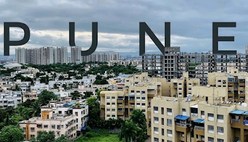

Places and Cities
Mumbai
- Gateway of India: An iconic monument overlooking the Arabian Sea, symbolizing Mumbai's historical significance.
- Marine Drive: A famous promenade known for its stunning views, especially during sunset.
- Chhatrapati Shivaji Maharaj Terminus: A UNESCO World Heritage Site, this historic railway station is renowned for its Gothic architecture.

- Elephanta Caves: A network of sculpted caves on Elephanta Island, featuring impressive rock-cut temples.
- Juhu Beach: One of Mumbai's most popular beaches, known for its lively atmosphere and street food.
- Colaba Causeway: A bustling street market offering a mix of shops, cafes, and street vendors.
Pune
- Aga Khan Palace: A historical landmark known for its stunning architecture and association with Mahatma Gandhi.
- Shaniwar Wada: A historic fortification and palace that served as the seat of the Peshwas of the Maratha Empire.
- Osho Ashram: A serene retreat center known for meditation and spiritual growth.

- Sinhagad Fort: A popular trekking destination offering breathtaking views and rich history.
- Pune Okayama Friendship Garden: A beautiful Japanese garden perfect for relaxation and family outings.
- Raja Dinkar Kelkar Museum: A museum showcasing an impressive collection of artifacts and crafts from across India.
Aurangabad
- Ajanta Caves: A UNESCO World Heritage Site featuring ancient rock-cut caves with stunning frescoes and sculptures.
- Ellora Caves: Another UNESCO site known for its impressive rock-cut temples and monasteries, showcasing intricate carvings.
- Bibi Ka Maqbara: A beautiful mausoleum built in memory of Aurangzeb's wife, often referred to as the "Mini Taj Mahal."

- Daulatabad Fort: A formidable fortress with impressive architecture, offering panoramic views of the surrounding area.
- Grishneshwar Temple: One of the twelve Jyotirlingas, a significant pilgrimage site dedicated to Lord Shiva.
- Shani Shingnapur: A village famous for its temple dedicated to Lord Shani, known for the unique absence of doors in houses.
Nashik
- Kumbh Mela: A major Hindu pilgrimage and festival held every 12 years, attracting millions of devotees.
- Shree Kalaram Sansthan Mandir: An ancient temple dedicated to Lord Rama, significant in Hindu mythology.
- Sula Vineyards: A renowned winery offering tours and tastings, set amidst picturesque vineyards.

- Anjneri Hill: A scenic hill known for its trekking trails and the birthplace of Lord Hanuman.
- Nashik Caves: Ancient rock-cut caves dating back to the 1st century AD, featuring intricate carvings.
- Pandav Leni: A group of Buddhist caves located on a hillside, offering a glimpse into ancient architecture.
Mahabaleshwar
- Arthur's Seat: A popular viewpoint offering stunning views of the valleys and hills.
- Venna Lake: A picturesque lake ideal for boating and enjoying the serene surroundings.
- Mahabaleshwar Temple: An ancient temple dedicated to Lord Shiva, known for its historical significance.

- Panch Ganga Temple: A temple where five rivers converge, known for its spiritual significance.
- Elephant's Head Point: A viewpoint that resembles an elephant's head, offering breathtaking vistas.
- Strawberry Farms: Famous for its strawberry picking experiences and fresh strawberry products.
Other Notable Attractions
Ajanta and Ellora Caves
- Ajanta Caves: A UNESCO World Heritage site, known for its rock-cut Buddhist caves adorned with intricate frescoes and sculptures.
- Ellora Caves: Another UNESCO World Heritage site featuring a remarkable fusion of Buddhist, Hindu, and Jain rock-cut architecture.
- Grishneshwar Temple: A famous Jyotirlinga temple located near the Ellora Caves, dedicated to Lord Shiva.

- Aurangabad Caves: A group of rock-cut caves that feature exquisite sculptures and ancient architecture.
- Bibi Ka Maqbara: An impressive mausoleum often referred to as the "Mini Taj Mahal," located in Aurangabad.
- Daulatabad Fort: A historic fort offering stunning views and insights into medieval Indian architecture.
Gateway of India
- Gateway of India: An iconic monument in Mumbai, built to commemorate the visit of King George V and Queen Mary in 1911, offering stunning views of the Arabian Sea.
- Colaba Causeway: A bustling street market nearby, known for its shops, cafes, and vibrant atmosphere.
- Elephanta Caves: A UNESCO World Heritage Site located on Elephanta Island, featuring ancient rock-cut temples dedicated to Lord Shiva.

- Taj Mahal Palace: A luxurious hotel located adjacent to the Gateway, known for its stunning architecture and rich history.
- Marine Drive: A scenic promenade offering beautiful views of the coastline and the Mumbai skyline.
- Chhatrapati Shivaji Maharaj Terminus: A UNESCO World Heritage Site and an architectural marvel of Victorian Gothic style.
Lonavala & Khandala
- Bushy Dam: A picturesque dam known for its scenic views, especially during the monsoon season.
- Lion's Point: A popular viewpoint offering breathtaking panoramic views of the Western Ghats.
- Bhushi Dam: Famous for its cascading waters, it's a great spot for picnics and enjoying the monsoon rains.

- Rajmachi Fort: A historic fort offering trekking opportunities and stunning views of the surrounding hills.
- Della Adventure Park: An adventure park with various thrilling activities for adventure enthusiasts.
- Karla Caves: Ancient rock-cut caves featuring impressive Buddhist architecture and sculptures.
Festivals and Cultural Events
Ganesh Chaturthi
- Overview: Ganesh Chaturthi is a Hindu festival celebrating the birth of Lord Ganesha, the elephant-headed god of wisdom and prosperity.
- Celebration: The festival is marked by elaborate decorations, processions, and the installation of Ganesha idols in homes and public places.
- Duration: The festival lasts for 10 days, culminating in the immersion of the idols in water bodies.

- Significance: The festival symbolizes the removal of obstacles and the arrival of new beginnings.
- Public Celebrations: Major cities like Mumbai see grand celebrations, with processions that attract thousands of devotees.
- Cultural Programs: Many cultural events, including music, dance, and drama, take place during this festive period.
Diwali in Maharashtra
- Festival Overview: Diwali, also known as the Festival of Lights, is celebrated with great enthusiasm across Maharashtra. It symbolizes the victory of light over darkness and good over evil.
- Traditions: People clean and decorate their homes, light oil lamps (diyas), and burst firecrackers. Rangoli designs adorn the entrances, and families gather for prayers.
- Sweets and Snacks: Maharashtrians prepare traditional sweets like modaks, pedas, and chaklis, sharing them with friends and family.

- Cultural Significance: Diwali marks the return of Lord Ram to Ayodhya after defeating Ravana, celebrated with grandeur and joy.
- Community Celebrations: Local communities organize fairs, cultural programs, and fireworks displays, bringing people together.
- Market Festivities: Markets are beautifully decorated, and special sales attract shoppers looking for festive deals on clothes, sweets, and decorations.